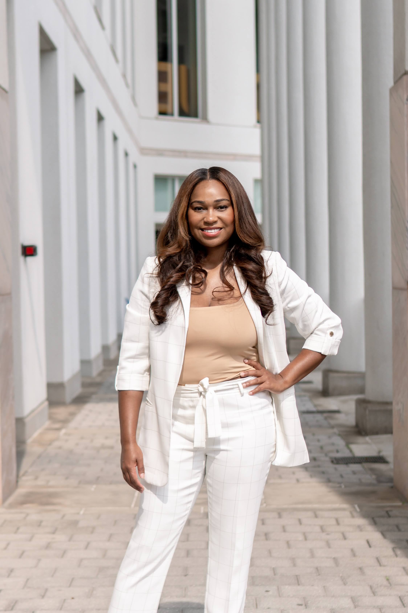

Meet Aliya White, MBA
Founder & Principal Consultant
Corporate strategy professional with 10+ years of experience across investment banking, management consulting, venture capital, and enterprise technology, including JP Morgan and Deloitte. Known for entering ambiguous, complex environments, identifying what leadership actually needs, and delivering the structures, frameworks, and strategic plans that move organizations forward.
Professional Background
Peachbeach Marketing is led by Aliya White, an MBA graduate from Emory University and Consortium Fellow with demonstrated success in building go-to-market strategies from zero, scaling products to 20+ Fortune 500 clients, and driving 200% YoY revenue growth. With experience at JP Morgan, Deloitte, and Wipro, Aliya provides a powerful blend of strategic thinking and operational execution.
Holding an MBA from Emory University and a Bachelor of Arts in International Relations from Spelman College, Aliya brings rigorous analytical capabilities combined with deep practical experience in product marketing, market research, financial modeling, and strategic partnerships across financial services and enterprise technology.
Core Competencies
Product Marketing Leadership
- Go-to-market strategy development
- Product positioning & segmentation
- Launch planning & execution
- Cross-functional team leadership
Strategic Partnerships
- Partnership opportunity mapping
- Competitive landscape analysis
- Stakeholder management
- Pipeline generation & qualification
Market Research & Analytics
- Financial modeling & forecasting
- Market sizing & opportunity analysis
- Competitive intelligence
- Data-driven decision making
Corporate Strategy
- Growth strategy & portfolio optimization
- Business case development
- P&L management & forecasting
- Digital transformation leadership
Education & Recognition
🎓 MBA, Consortium Fellow - Emory University, Atlanta, GA (Full Academic Scholarship)
🎓 B.A. International Relations - Spelman College, Atlanta, GA
Career Highlights
Manager, Corporate Strategy & Innovation
WIPRO (2023 – 2025) | Los Angeles, CA
- Built Wipro's go-to-market function for Vision Edge from zero, defining positioning, segmenting markets, and developing the business case that drove the decision to enter
- Scaled to 20+ Fortune 500 enterprise clients generating $3M+ ARR within the first year
- Identified and mapped 30+ strategic partnership opportunities; generated $30M+ in qualified pipeline through targeted outreach
- Managed $500K product marketing budget and drove 200% YoY revenue growth
- Led cross-functional collaboration between Product, Sales, Marketing, Engineering, and Global Delivery teams
Strategy Lead – Latin America Market Expansion
LOH MEDICAL (MBA Project, 2022 – 2023) | Atlanta, GA
- Led a team of six first-year MBA students advising Loh Medical on international market expansion strategy
- Delivered a Mexico City market entry strategy supported by a 5-year financial model projecting $1.6M in incremental revenue by 2027
- Client adopted and implemented the strategy post-engagement
- Designed a phased implementation roadmap driving projected 40% YoY topline growth
Strategy Consultant – Digital Transformation
DELOITTE (2019 – 2020) | Washington, DC
- Deployed as subject matter expert on a JP Morgan digital transformation engagement
- Built the business case for automating JP Morgan's monthly credit card update process, projecting $5M in annual savings and 50% efficiency improvement
- Secured executive approval; client extended the engagement into a multi-year managed services contract
- Drove enterprise-wide platform adoption across 200+ employees through stakeholder workshops
Compliance Analyst for Wealth Management
JP MORGAN (2013 – 2017) | London, England, UK
- Served as departmental representative in New Business Initiative Approval meetings for a $3.2T wealth management division
- Evaluated regulatory implications, market opportunities, and competitive positioning for 25+ new products and services
- Designed and rolled out a client protection policy framework that reached 600+ wealth management employees
- Led BOLD (Black Organization for Leadership & Development), growing ERG participation 40%